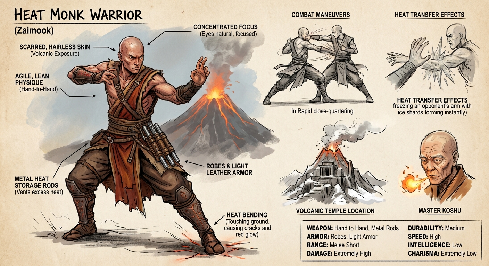
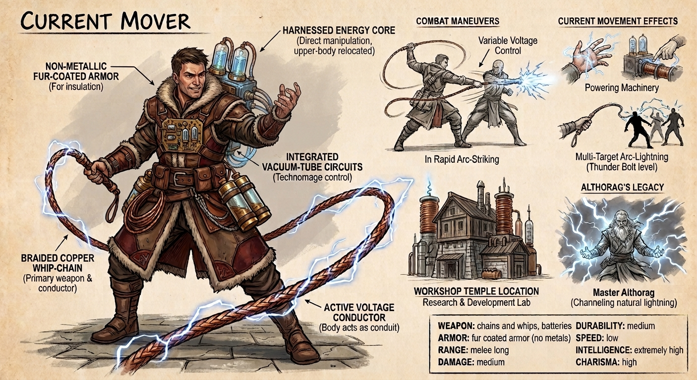
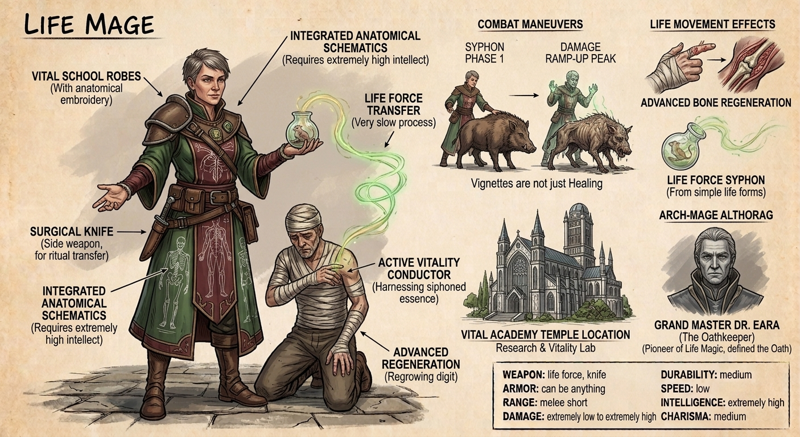
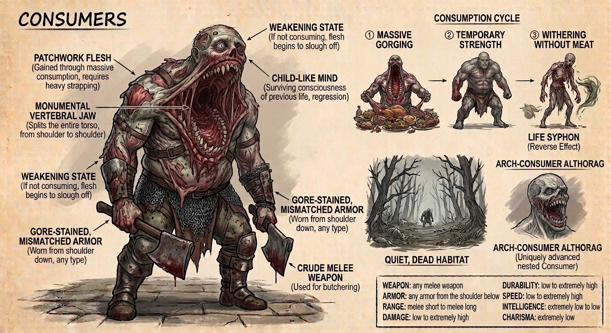
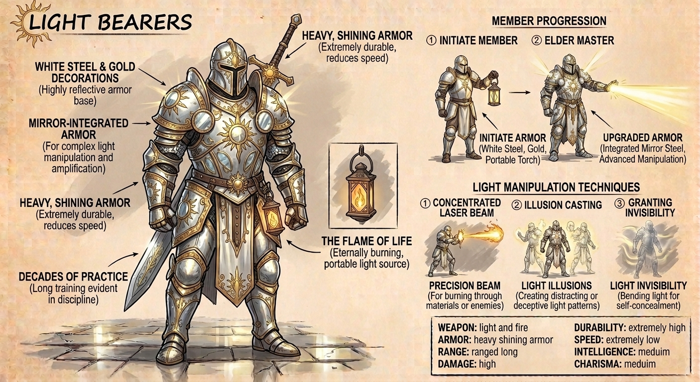
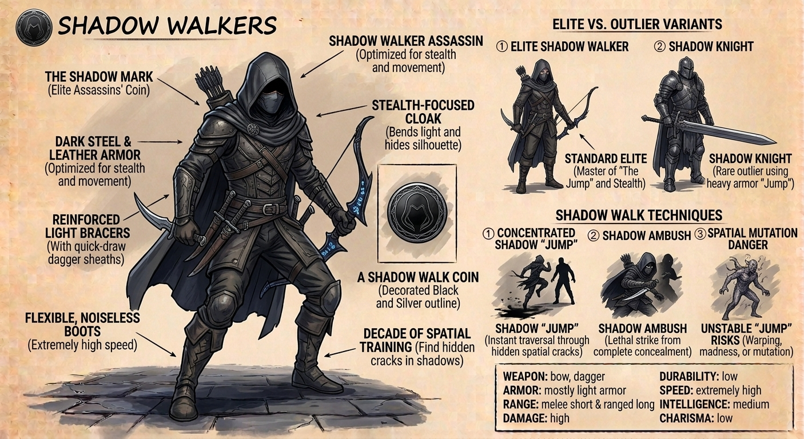
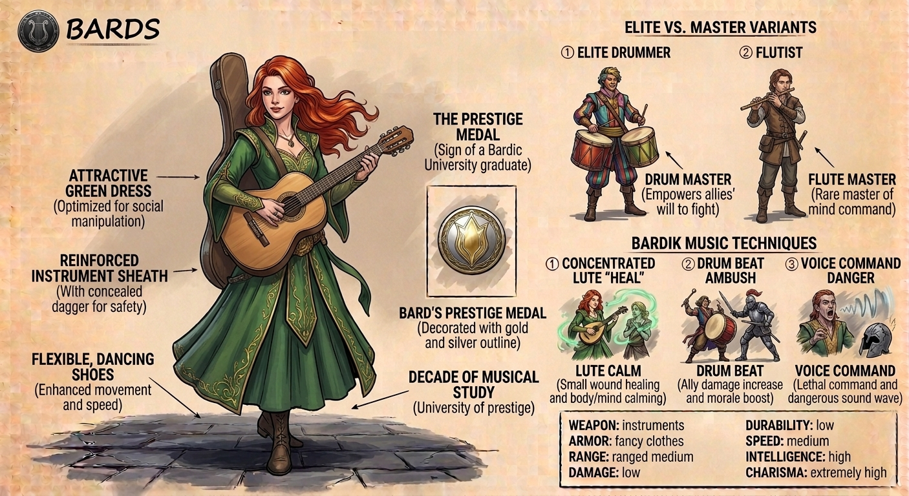
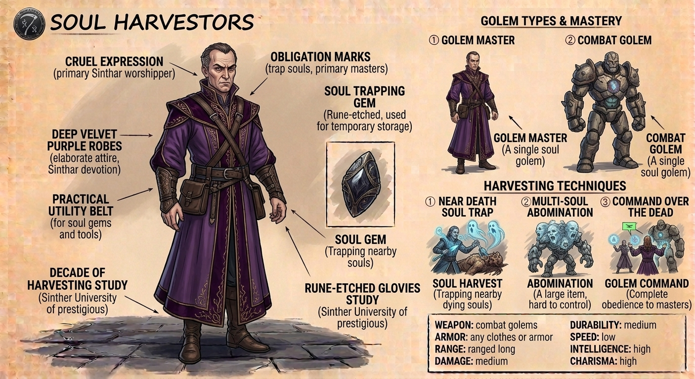
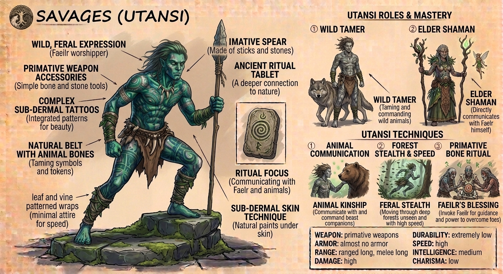
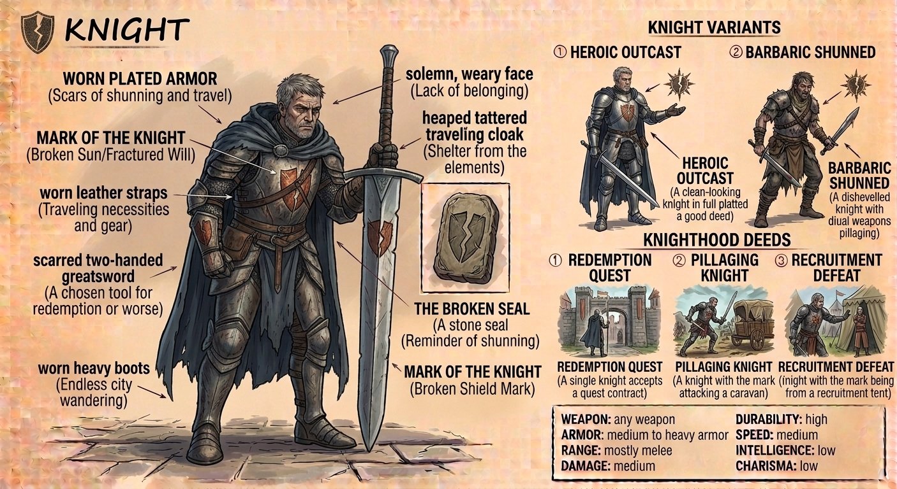

Classes
Classes are the main playable characters in this universe and each are
different yet still in line with the limits of this universe. So each
class has base stats and equippable items so that it feels more grounded
while still having its magical abilities. There still can be sub-classes
from each main class that I have in mind, but I also need to give it
more time to find its footing.
You can find more about each class from the menu above.
Heat Monks
The monks of the heat bending order are some of the most incredible
fighters in all of Zaimook and are able to transfer the expected
amount of heat from anyone or anything as long as their skin makes
contact with the object.
They are super deadly in close range and especially hand-to-hand
combat, and once they touch you there is no going back. They are
trained from early childhood to be agile, hard to catch, and extremely
focused on their objective.
Their training starts as a baby when they are taken to the elders of
the heat temples to be tested, and if their ability to bend heat in
them is strong, they are sent to the heat bending order where they
live the rest of their lives.
All of their temples are located at the top of active volcanoes where
the winds above freeze the animals and heat below burns the skin and
hair off their bodies. This environment is perfect for teaching the
new students how to bend the heat inside themselves before they are
able to bend others.
Their most skilled warriors mostly aim for the joints and the spine
where a small decrease of heat turns that part into solid ice, and
breaking that frozen part will paralyze their victims. And because
they are taking the heat from something, they have to store it or they
will burn themselves; for this, they carry metallic rods with them to
be able to store large amounts of heat without any issues.
Their masters are able to burn things close to them without ever
feeling any heat or make frost armor, especially Master Koshu who was
the only record of a heat monk breathing fire out of their mouth—not
in large quantities, but still enough to burn the skin off someone.
To the outside world they are only monks who live in the mountains,
but their power and discipline is unquestionable and their magic is an
art.
-
Weapon => Hand to hand, metal rods
-
Armor => Robes, light armor
-
Range => Melee short
-
Damage => Extremely high
-
Durability => Medium
-
Speed => High
-
Intelligence => Low
-
Charisma => Extremely low

Current Movers
The art of current moving is the concept we have of combining science
and magic. Each current mover is both a technician and a mage at the
same time.
They carry around batteries and usually copper whips as their main
tool and weapon.
Their ability to control the electric current within their body and
other objects makes them not only very useful for different tools and
machines, but also exceptionally dangerous.
Their usual tactic is to use their chains for distance between them
and their opponent, then move an amount of current from a battery
through themselves and into their metallic chains onto their target.
However, this ability solely depends on how much voltage they are
carrying through themselves—it can be anything from a light shock to a
thunderbolt going right through multiple enemies.
Because of their usefulness in many situations, current movers are
usually pretty cocky. While some prefer their labs and workshops to
create new things, others are rogue travelers doing whatever job they
can just to eat and sleep for the next day.
There have been some true masters of current moving in recent years
since this magic was founded, and one named "Althorag" was well known
for being able to summon lightning unto himself, then channel that for
massive amounts of destructive power.
For most people, these technicians are among the most useful members
of society, usually regarded as scientists or inventors.
-
Weapon => Chains and whips, batteries
-
Armor => Fur coated armor (no metals)
-
Range => Melee long
-
Damage => Medium
-
Durability => Medium
-
Speed => Low
-
Intelligence => Extremely high
-
Charisma => High

Life Mages
The life mage is a sacred and most respected form of magic. Its users
are mostly doctors and medics offering their aid to those in need.
These mages have spent countless years at vital schools, which are the
only schools capable and allowed to teach life magic to their students.
Their lessons and exams are the hardest, for there is no room for error
in this type of magic.
These mages are able to take the life force out of a creature's physical
body and transfer that to themselves or their allies. It is a very slow
process, but the amount of regeneration of limbs that normally would be
impossible to grow back is amazing.
All life mages, before graduating from vital schools, have sworn an oath
to never kill other people with their magic and only seek to aid them.
Of course, there are examples of people who have gone rogue and broken
their oaths.
A life mage can take an amount of life force out of a creature and apply
an equal amount of that to someone else, but they have to be extremely
precise so that they wouldn't regenerate too much, as it can lead to
fatal injuries.
For example, if a life mage wants to heal a broken bone, they need to
know exactly the bone's size, its density, its structure, and where it
is going to grow from—or they might spread that and turn the flesh into
bones as well.
Their masters are able to siphoning the life force so fast that the
creature it's being taken from would die before it even felt any pain,
or they can turn their enemies' legs into jelly in an instant or turn
someone into a statue made out of living bone in less than an hour.
These mages' damage stats need time to ramp up, and when it hits the
peak, it is massive.
-
Weapon => Life force, knife
-
Armor => Can be anything
-
Range => Melee short
-
Damage => Extremely low to extremely high
-
Durability => Medium
-
Speed => Low
-
Intelligence => Extremely high
-
Charisma => Medium

Consumers
Once normal humans, these beings have become one of the elite cursed
ones, yet the only ones to be somewhat safe around others.
Their condition is to only consume and keep consuming. As long as they
keep doing this, their bodies grow bigger and stronger, but when they
stop, they will become weak. Because their bodies are dead, their newly
gained flesh starts to fall off.
This curse removes all magic from their body and leaves them conscious
as long as they have enough body mass. Once their bodies become too
weak, they lose control and begin madly ravaging for every bit of flesh
and meat they can find to keep them from completely dying.
Once they find a piece of flesh, their jaws open from one shoulder to
another, and they begin consuming their meal whole so that they can
directly use that body mass to increase their own.
With each feast, their body mass grows larger and increases their stats,
but their minds remain the same as a child's. They don't completely
remember their old lives, only some parts.
Their usual habitat is far away from cities. Where they live is quieter
than other places nearby, as if every animal or creature has fled or is
dead. They don't communicate much either, and when they aren't hungry
and spot a human, they usually try to run away so they won't harm
anyone.
There are two ways of cursing someone with consumerism: first, they must
eat the raw, fresh flesh of people 5 times a day for 5 days, and on the
5th day, their bodies start morphing into their new forms.
The other method is to perform a ritual requiring a target and 3 others.
The target sits in the middle while the others spread rotten flesh
around them and chant "drink the meat, take the flesh" for at least 5
hours. After that, one of the 3 enchanters suddenly dies, and their life
force is used by the target unwillingly to turn into a consumer.
-
Weapon => Any melee weapon
-
Armor => Any armor from the shoulder below
-
Range => Melee short to melee long
-
Damage => Low to extremely high
-
Durability => Low to extremely high
-
Speed => Low to extremely high
-
Intelligence => Extremely low to low
-
Charisma => Extremely low

Light Bearers
The highly esteemed school of magic known as Light Bearers consists of
paladins and priests of the sun god with the ability to redirect light
as they see fit.
This form of magic isn't new, but in the past it was only regarded as
"Luminants." That all changed after the sun worshippers rose to power
and tried to conquer the world by force, only to be defeated by the
hands of the Council. After years of being a quiet cult, they spread
their teachings so much that they are now a fully recognized religion in
the Council.
The ability to create light might not seem incredible at first, but the
range of abilities it provides—from a bright flash to see in the dark,
to a precise laser beam that can burn through anything, to making
illusions, and even granting themselves invisibility by bending light
before it touches their skin—makes their abilities extremely versatile.
Becoming a Light Bearer is a difficult task, and membership is not
granted to just anyone. Training the body to master light and training
the mind to serve the sun as its master takes decades worth of practice
and rituals.
However, a Light Bearer cannot create light on their own; they always
need a source. Thus, they are given "The Flame of Life"—an eternally
burning flame crafted by runesmiths for each Light Bearer once they
become a full member, removing the weakness of needing an external light
source.
A new Light Bearer wears heavy armor forged in white steel with golden
decorations, carrying their flame as a torch, lamp, or beacon. Elder
members wear upgraded armor made of a new steel that combines toughness
with the reflectivity of mirrors, along with additional mirrors attached
to increase their power and effectiveness.
These paladins remain loyal to their core; killing or burning a heretic
in both their eyes and the Council's is seen as completely justified.
-
Weapon => Light and fire
-
Armor => Heavy shining armor
-
Range => Ranged long
-
Damage => High
-
Durability => Extremely high
-
Speed => Extremely low
-
Intelligence => Medium
-
Charisma => Medium

Shadow Walkers
The cult of the shadow walkers is an organization which houses the most
elite and deadly assassins. Their training grounds are completely
unknown, and they don't take jobs or contracts from others, unlike the
mercenary guilds around the world.
The shadow walkers themselves are all travelers and they never stay in
the same place for long. Their motives are also unknown, for they do not
value gold, status, or even power; if they feel someone is wrong, they
deal with them, otherwise they don't interfere with anything.
These assassins train their bodies and minds to be able to find hidden
cracks in space within shadows, and after finding them, they are able to
move through them at will. They refer to this ability as "The Jump."
The bigger the jump is, the more unstable it becomes. Risks range from
madness and mutations to spawning in a completely different part of the
world—the dangers of the jump are limitless, and the walkers know how to
avoid these as much as they can.
When someone receives the "shadow mark"—a simple yet beautiful black
coin decorated with a silvery outline—it means that they are marked for
death by a shadow walker. When a mark is in place, there is no turning
back until the target is dead and the walker retakes the mark.
The walkers' usual weapons are bows and daggers, wearing lighter armor
to make jumping easier. However, there have been sightings of fully
heavy-armored knights, covered from head to toe, wielding massive
two-handed weapons and using the jump.
-
Weapon => Bow, dagger
-
Armor => Mostly light armor
-
Range => Melee short & ranged long
-
Damage => High
-
Durability => Low
-
Speed => Extremely high
-
Intelligence => Medium
-
Charisma => Low

Bards
The Bards are usually unassuming folk who sing and play to amuse both
themselves and others, but once they decide to study further, they begin
to learn how to use a musical instrument as a weapon.
One of the main downsides to their arts is the price of entering the
college in the first place. It is extremely prestigious, which makes
them crave gold more than anything to pay off their debt.
Each instrument has its own unique effect on its surroundings. For
example:
The drums increase allies' damage and their will to fight.
The flute commands others and influences their minds to do your bidding.
The guitar heals smaller wounds and can calm both body and mind, and so
on with other instruments.
Masters of the bardic arts rarely use any instrument; instead, they can
use their voice as a method to cast spells. Yet, some masters prefer to
use a single instrument to its fullest potential.
The master Kinadov had such a strong voice that her simplest words could
shatter eardrums. When she was chosen to rule her hometown, she couldn't
open her mouth to swear loyalty to her people; because of it, she had to
give up ruling over her town and lived the rest of her life on a
mountain peak to tune her voice even further.
But a bard's strongest skill is their ability to manipulate people
through their honeyed words—the amount of power that resides in a bard's
tongue has no limits.
-
Weapon => Instruments
-
Armor => Fancy clothes
-
Range => Ranged medium
-
Damage => Low
-
Durability => Low
-
Speed => Medium
-
Intelligence => High
-
Charisma => Extremely high

Soul Harvesters
Soul harvesters are cruel slavers and primary worshippers of Sinthar.
They are able to take the souls of near-dying people and creatures and
trap them in any object that fits the soul's size.
Some items are far too big for a single soul to inhabit, so the
harvesters use multiple souls in a single item, and the resulting
abomination is extremely hard to control.
Once the soul is infused with ANY object—from a piece of wood to a
beautiful marble statue—anything that can house its soul becomes a
"golem." A golem has complete awareness and is able to use its new body,
BUT it cannot disobey or harm its master or anyone who possesses "the
mark of ally."
There have been a few cases of those whose willpower was stronger than
the slaver masters', allowing them to run free, though they could never
return to their original bodies.
Soul harvesters are well-known, especially to farm and factory owners.
Usually, soul harvesters carry small soul gems with them so that they
can temporarily store a soul inside for later use or sale.
Not all harvesters look for money and power, however. Some artists are
known to do it for depraved acts, while other people pay well-known
harvesters to put their souls into a better body as a way to cheat
death.
The limits of soul harvesting haven't been seen yet, and there are
almost no regions that ban their line of work, even if many see it as
unethical.
-
Weapon => Combat golems
-
Armor => Any clothes or armor
-
Range => Ranged long
-
Damage => Medium
-
Durability => Medium
-
Speed => Low
-
Intelligence => High
-
Charisma => High

Savages (Utansi)
"Savages" is the name normal folk have given to the Utansi clan.
The Utansi are a clan of ancient people who live in the deep forests
north of the mountains and are deeply connected to nature.
They follow a strict code given to them by their god that puts survival
above everything, and they see the undead as a crime against the goddess
of life.
The color of their skin is usually a pale gray that resembles the
undead. As an attempt to become more beautiful upon reaching adulthood,
they begin changing their skin color by carefully removing a layer of
skin, applying natural paint beneath it, and reattaching the skin as a
fast, distinct form of tattooing.
Of course, the color and placement of the tattoos are completely decided
by the individual and their role in society, though it is usually
different shades of green, blue, and brown.
The Utansi have ancient, secret rituals that they never discuss with
outsiders. Foreigners are strictly forbidden from witnessing or knowing
such practices, but the result of these rituals is a deeper connection
to nature and their god.
The Utansi can tame and communicate with wild animals and use simple
tools and weapons crafted from sticks and stones as defensive measures.
They have no issue with killing animals or humans, but eating meat is
strictly forbidden, and their clothing is minimal according to the law
of the god of beauty.
Their elders possess a deep connection to every animal and have
heightened senses, but their most special gift is being able to directly
communicate with Faelir herself for guidance and power to overcome their
foes.
-
Weapon => Primitive weapons
-
Armor => Almost no armor
-
Range => Ranged long, melee long
-
Damage => High
-
Durability => Extremely low
-
Speed => High
-
Intelligence => Medium
-
Charisma => Low

Knight
In every group and clan there is an outcast, and when that person goes
too far, they become shunned and are given the title of Knight.
Once a knight is shunned, "the mark of the knight" is branded into their
armor or skin as a constant reminder to themselves and others that they
are not to be trusted.
A knight is expelled from their group and forced to wander alone through
cities, struggling to meet their basic survival needs.
Some knights attempt heroic deeds in search of redemption, while others
commit far worse acts without the moral restrictions of their former
kin.
Every knight has distinct goals and personality traits, but they all
share a total lack of belonging. While a faction can revoke a knight's
exile by accepting them back, until then, they are regarded as nothing
more than dangerous deadweight.
Knights typically wear medium-to-heavy armor and specialize in wielding
one or two weapons; some utilize magic, while others grow hostile at the
very concept of it.
Some knights operate as solitary travelers completing contracts for
coin, while more barbaric outcasts kill and pillage for their
necessities.
-
Weapon => Any weapon
-
Armor => Medium to heavy armor
-
Range => Mostly melee
-
Damage => Medium
-
Durability => High
-
Speed => Medium
-
Intelligence => Low
-
Charisma => Low
